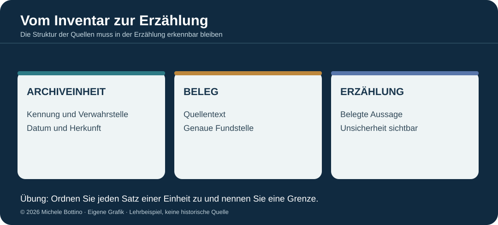

Officina delle Storie · Archive und Kulturerbe
Vom Archiv zur Erzählung
Entwickeln Sie aus überlieferten Dokumenten eine Erzählung für das Publikum. Wählen Sie einen roten Faden und halten Sie Herkunft, Zusammenhänge, Belegstellen und Grenzen der Quellen sichtbar.
Es ist kein Vorkurs vorgeschrieben. Grundkenntnisse im Lesen, Zusammenfassen und Schreiben sind von Vorteil. Die Abschlussarbeit ist eine Erzählung von 900–1.300 Wörtern mit Quellenapparat.

Lernziele
- Fragestellung und Publikum einer Erzählung aus Archivquellen bestimmen.
- Mindestens sechs Einheiten unter Angabe von Bestand, Serie, Einheit, Datum und Verwahrstelle inventarisieren.
- Zeitangaben, Personen und Orte verknüpfen und den Grad der Gewissheit angeben.
- Eine Tabelle der Aussagen mit überprüfbaren Belegstellen erstellen.
- Eine Archiverzählung von 900–1.300 Wörtern verfassen, ohne Ergebnisse zu erfinden.
- Einen zugänglichen Rundgang mit Objekttexten, Anmerkungen und Quellenverzeichnis gestalten.
- Privatsphäre und Rechte berücksichtigen, Fassungen dokumentieren und die Arbeit überarbeiten.
Über allgemeine Quellenprüfung und Einzelbiografie hinaus untersucht der Kurs die Beziehungen zwischen den Einheiten eines Archivs und ihre Umsetzung in eine nachvollziehbare Erzählung.
Die zehn Einheiten
Frage, Publikum und Grenzen des Erzählprojekts festlegen.
Lektion öffnen → (IT)Einheit 2/10Bestand und HerkunftVor dem Zitieren Hierarchien und Zusammenhänge bewahren.
Lektion öffnen → (IT)Einheit 3/10Die DokumentbeschreibungNachnutzbare Beschreibungen ohne unbelegte Deutungen erstellen.
Lektion öffnen → (IT)Einheit 4/10Zeiten, Personen und OrteChronologien und Normdatensätze ohne erfundene Verbindungen erstellen.
Lektion öffnen → (IT)Einheit 5/10Den roten Faden wählenAus dem Dossier eine Gliederung entwickeln, ohne die Belege zu verzerren.
Lektion öffnen → (IT)Einheit 6/10Vom Dokument zur AussageEine Tabelle erstellen, die jede wesentliche Aussage belegt.
Lektion öffnen → (IT)Einheit 7/10Stimmen und Dokumente in der ErzählungUnterschiedliche Ausdrucksformen verbinden, ohne unbelegte Worte zuzuschreiben.
Lektion öffnen → (IT)Einheit 8/10Vom Archiv zum RundgangZugängliche Formate gestalten und Belege nachvollziehbar halten.
Lektion öffnen → (IT)Einheit 9/10Überarbeitung, Schutz und RechteEine überprüfbare Fassung erstellen, ohne schutzwürdige Angaben offenzulegen.
Lektion öffnen → (IT)Einheit 10/10Werkstatt: die ArchiverzählungEin Erzähldossier mit Quellenapparat abschließen und prüfen.
Lektion öffnen → (IT)Der Fall A-01
Der Kartenraum: sieben erfundene Dokumente, dreizehn Aussagen und Fragen sowie eine Erzählung mit 1.055 Wörtern. Verfolgen Sie den Weg vom Inventar zur Abfolge für das Publikum.
Vorgesehene Bewertungskriterien
| Kriterium | Höchstwert |
|---|---|
| Herkunft und Ordnung | 20 |
| Belegtabelle und Zitate | 25 |
| Aufbau und Lesbarkeit der Erzählung | 25 |
| Zugänglichkeit, Privatsphäre und Rechte | 15 |
| Überarbeitung und editorischer Apparat | 15 |
| Gesamt | 100 |
Die vorgesehene Schwelle liegt bei 70/100. Eine offizielle Beurteilung oder Bescheinigung wird derzeit nicht angeboten.
Eine Übung mit historischen Originalquellen
Erproben Sie die Methode an überlieferten Dokumenten. Entwerfen Sie vier Tafeln anhand dreier Ausgaben des Morgan City Daily Review von 1918. Wählen Sie Einheiten aus, beschreiben Sie diese, ordnen Sie sie an und weisen Sie ihre Herkunft aus. Gefragt ist ein Ausstellungskonzept; der historische Artikel des anderen Kurses soll nicht nacherzählt werden.
Abschlussportfolio
Eine Erzählung von 900–1.300 Wörtern, mindestens sechs Einheiten mit Herkunftsangaben und acht Belege.
- Eigene Erzählung
- Kommentiertes Inventar mit mindestens sechs Einheiten
- Chronologie und Aussagentabelle
- Zwei Objekttexte mit Quellenangaben
- Drei begründete Überarbeitungen
- Hinweis zu Herkunft, Rechten und Grenzen
Bei einem tatsächlichen Archiv sind Quellenprüfung sowie Genehmigungen für Einsichtnahme und Veröffentlichung erforderlich.
Fortschritt und Notizbuch
Daten werden vom Gerät geladen …
Exportieren Sie das Portfolio, um eine Kopie außerhalb des Browsers zu behalten.